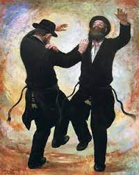

A música dentro do judaísmo tem como objetivo comemorar alguma situação ou rememorar alguma situação, mas acima de tudo, tem como único objetivo glorificas a HaShem, a D'us.

Baruch HaShem!!!
Escute algumas destas músicas e cantos que fizeram história dentro o povo judeu.
Adon Olam - Eitan Katz
Adon Olam (do Hebraico:אֲדוֹן עוֹלָם, "Senhor do Universo/Mundo"), é um poema judaico tradicional muito famoso no meio rabinico, cantado na voz do Rav. Eitan Katz.
A Yid - Benny Friedman
Yid, uma palavra em íidiche (dialeto que mistura hebraico, aramaico, alemão e linguas eslavas antigas, criado pelos judeus ashkenazim) que significa "judeu".Uma música cantanda na voz do Rav. Benny Friedman, que consegue expressar a voz de mais de 6 milhões de judeus que foram assasinados no holocausto.#weremember
Bizchut HaTorah - Motty Steinmetz
Vem do hebraico בזכות התורה que significa: "Pelo mérito da Torá".Música esta na voz de Motty, nos faz lembrar que pelo mérito da Torá, da Palavra de D'us, o mundo será salvo.
L'maancha - Eitan Katz
Esta linda canção, na voz do Rav. Eitan Katz nos faz lembrar que somente por D'us somos salvos e curados.
Abba - Avraham Fried
Abba, que traduzido significa "Pai", na voz do Rav. Avraham Frid, nos faz olhar para D'us e saber que somos cuidados e amados como filhos.
Niggun Tzomah Lcha Nasfhi - Rebe de Lubavitch
Um Niggun (expressão mais profunda da alma em "sintonia" ou "melodia" em hebraico: ניגון), criado pelo próprio Rebe, baseado no Tehilim (Salmo) 63:2 e 3.Ensina por ele pela primeira vez em 28 de Nissan de 5714, se tornou um dos mais memoraveis cânticos para a tradição Chabad.
Esta são apenas algumas das músicas que elevam a espiritualidade.
Caso queira escutar mais, acesse essa playlist: Músicas Judaicas
Se aprofunde nos estudos de Torá.
Acesse todo o conteúdo que temos no site e fique por dentro do mundo judaico, do mundo da Torá.